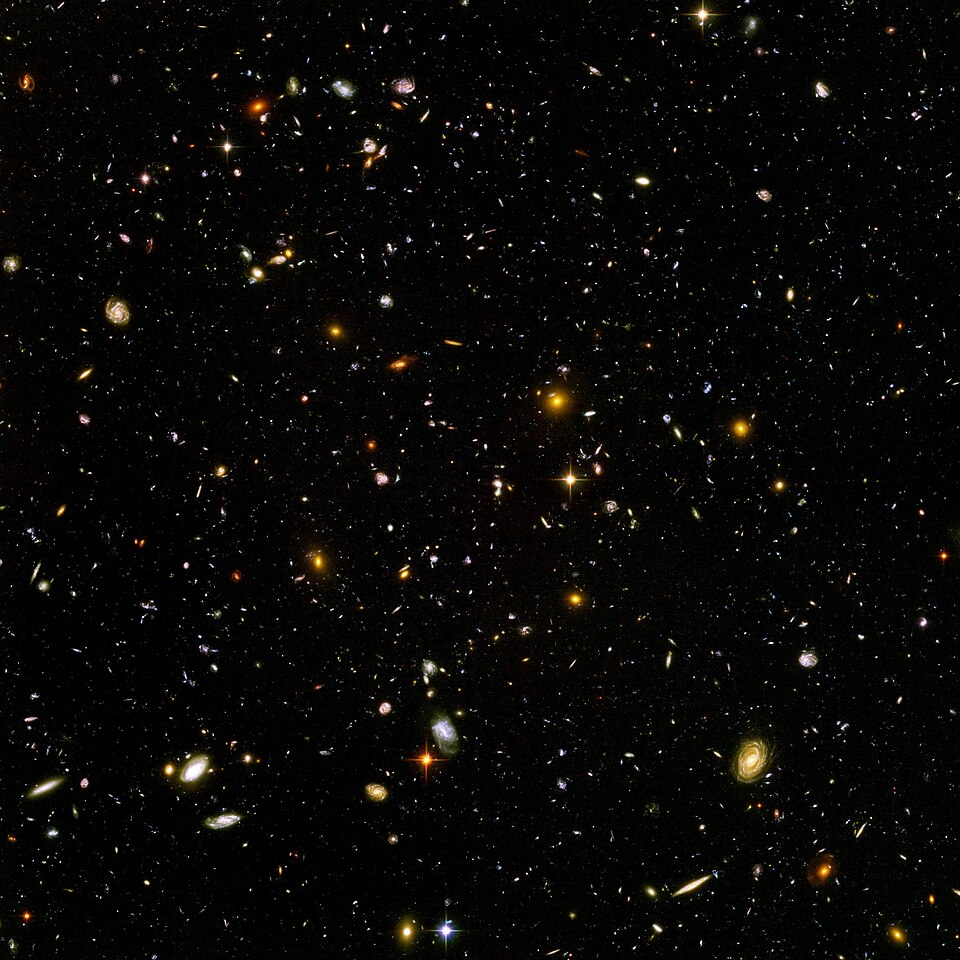
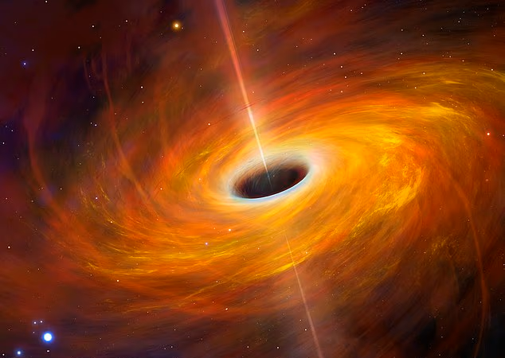
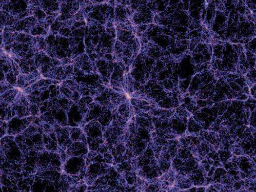
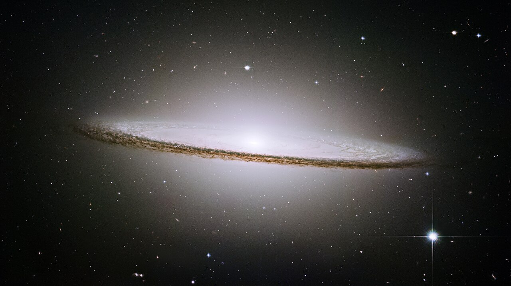
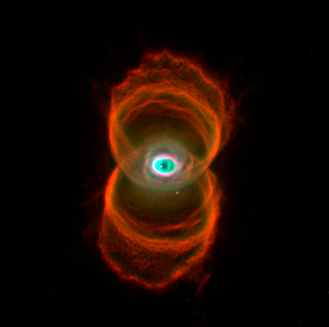
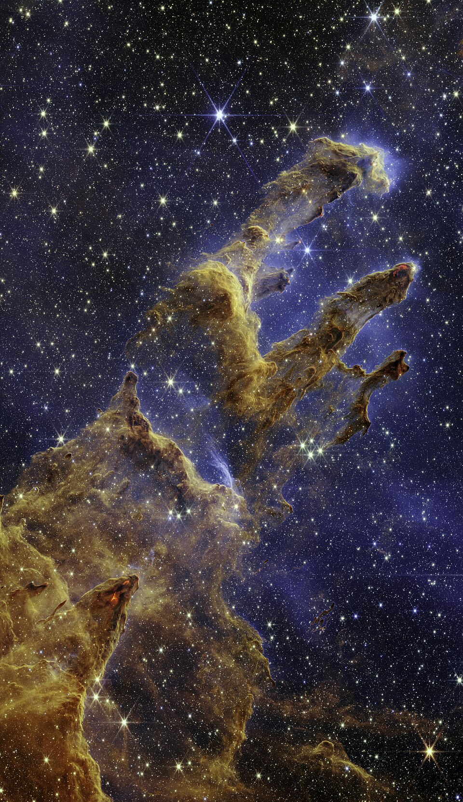
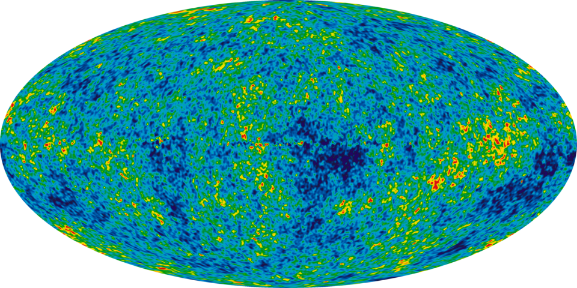

Het Hubble Ultra-Deep Field (HUDF) is een opname van een klein deel van de hemel in het sterrenbeeld Oven gemaakt door de Hubble Space Telescope. Het centrum van het veld bevindt zich bij rechte klimming 3h 32m 39,0s en declinatie −27° 47' 29,1″.

Artistieke weergave van een zwart gat.

Een simulatie van het grootschalige web van donkere materie in het heelal.

Het Sombrero-stelsel, ook bekend als Messier 104.

De Engraved Hourglass Nebula (Gegraveerde Zandlopernevel), ook bekend als MyCn 18.

Zuilen der Schepping (Pillars of Creation) in de Adelaarsnevel.

de kosmische achtergrondstraling (Cosmic Microwave Background of CMB), wat vaak wordt omschreven als de "babyfoto" van het heelal.